Integração com o TikTok Shop
Pré-requisitos
- Para autorizar, esteja logado na loja TikTok. A tela avisa Você não está logado na loja TikTok e orienta Acesse o painel TikTok para logar.
Importante
- A loja da aba Geral é escolhida depois da autorização.
- Naturezas de operação, listas de preços e depósitos dos campos são os já cadastrados na conta.
- O texto de ajuda de estoque informa que a conta tem reserva de estoque e não recomenda o lançamento automático ao salvar o pedido.
- Em Formas de Frete, Código na integração não aceita digitação enquanto Forma de envio está vazia. Nesse caso, Forma de frete só oferece Selecione.
- Nenhum campo traz marcador de obrigatório.
Instruções
Instalar a integração
-
Acesse Início > Integrações.
-
Clique em Adicionar integração.
-
No card TikTok Shop, identificado como Marketplace, clique em instalar.
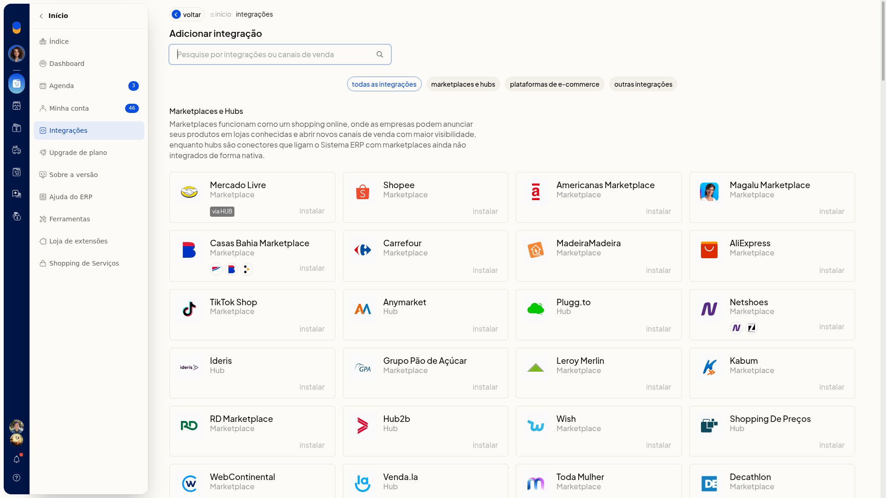
-
Em Conectar Integração, revise Nome da integração no ERP. O campo não é obrigatório, vem preenchido com TikTok Shop e pode ser substituído.
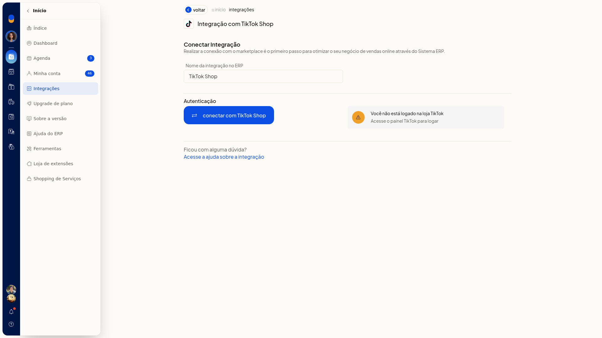
-
Na seção Autenticação, leia o aviso de login no painel TikTok e clique em conectar com TikTok Shop para autorizar a loja. O link Acesse a ajuda sobre a integração permanece na própria tela. A tela fica pronta para autorizar, com o nome informado e o aviso Você não está logado na loja TikTok se você ainda não estiver logado.
Configurar a integração já existente
-
Acesse Início > Integrações.
-
Localize o card TikTok Shop e clique em gerenciar.
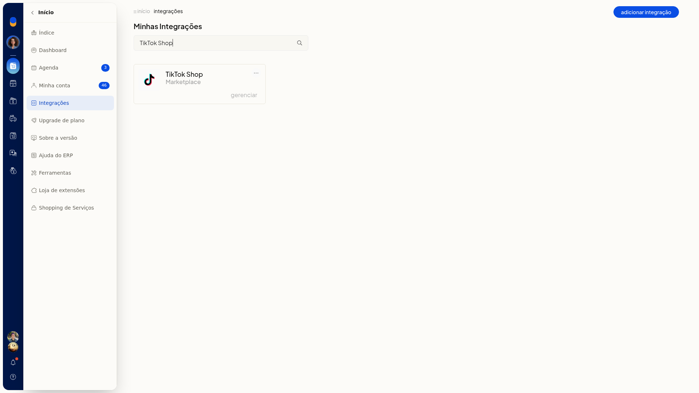
-
Use as abas Conexão, Produtos, Pedidos, Mapeamentos, Geral e Fulfillment. Não há aba Outros.
Conexão
-
Na aba Conexão, confira Nome da integração no ERP. O campo não é obrigatório.
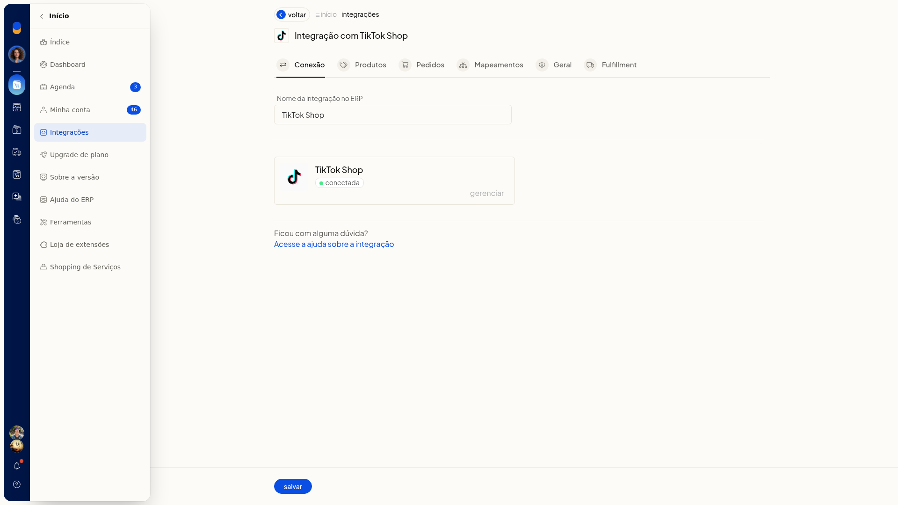
Produtos
-
Na aba Produtos, abra Regras de Estoque.
-
Em Atualizar estoque na loja virtual a partir do ERP, selecione Não atualizar, Enviar saldo físico ou Enviar saldo disponível. O campo não é obrigatório.
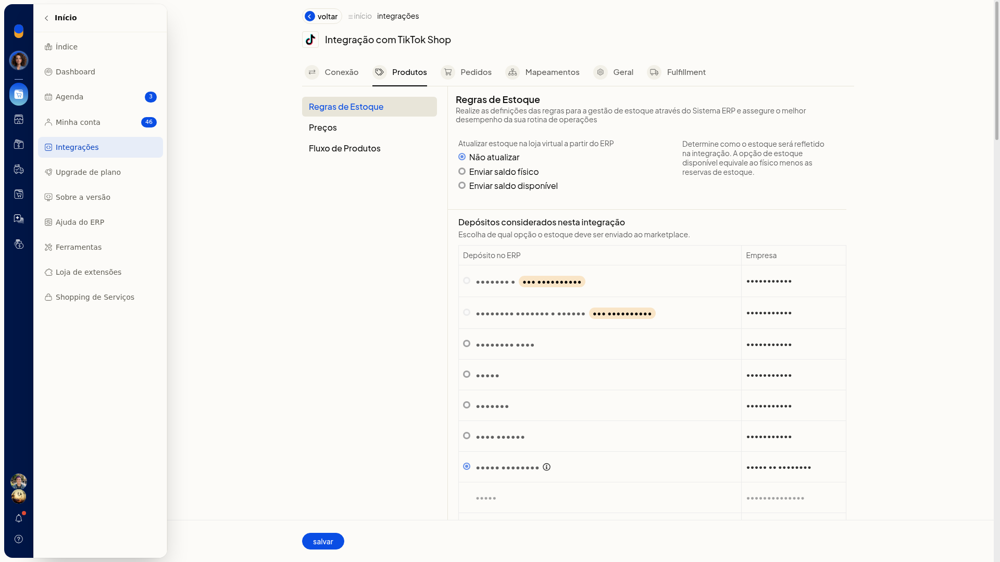
-
Preencha o restante de Regras de Estoque. Nenhum destes campos é obrigatório:
-
Depósito TikTok Shop a ser considerado na integração: busque o depósito.
-
Lançamento de estoque para saídas: selecione Usar configuração padrão da conta, Manual, Automático ao autorizar a nota fiscal, Automático ao salvar a nota fiscal, Automático ao salvar o pedido ou Automático ao marcar pedido como enviado.
-
Utilizar estoque de segurança: marque a caixa se quiser usar.
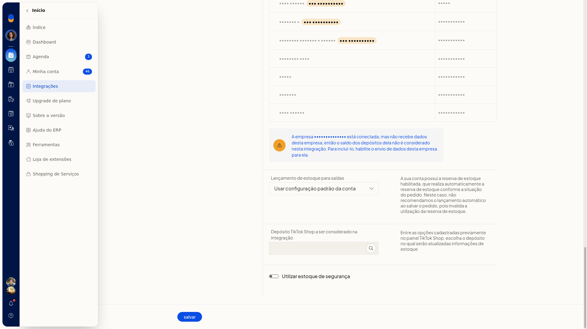
- Abra Preços.
- Em Regra de utilização de preços para o e-commerce, selecione uma opção. O campo não é obrigatório:
-
Preço fixo
-
Conforme lista de preços, que exibe Lista de preços utilizada nos produtos (opção inicial Selecione)
-
Conforme regras de preço
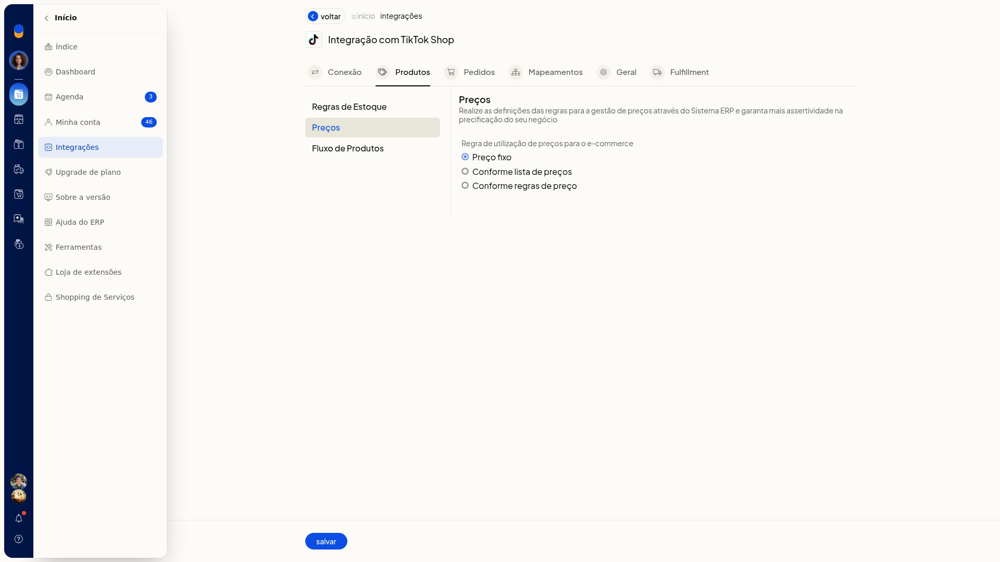
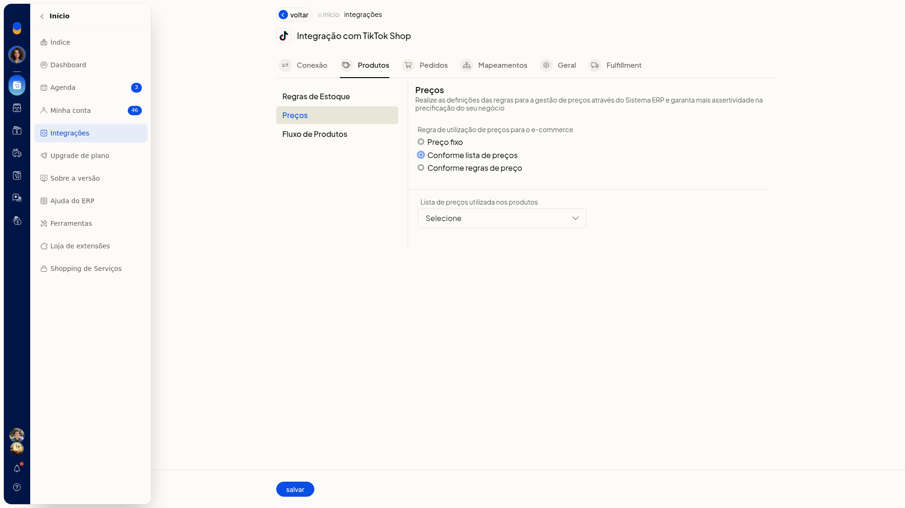
- Se escolher Conforme regras de preço, selecione Forma para aplicar os valores adicionais: Base simples ou Base por dentro. Informe Adicional de frete em valor monetário, como 9,90. O campo não é obrigatório. Clique em Adicionar regra de preço e pesos.
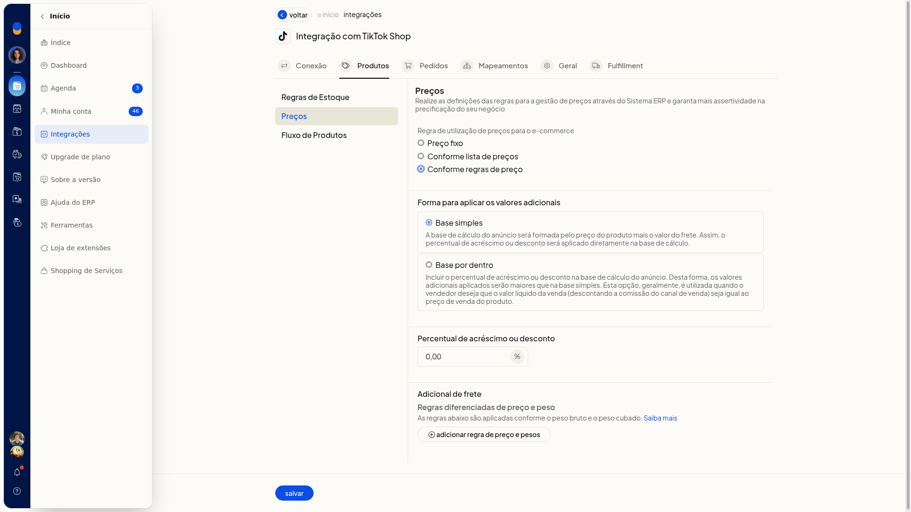
- No modal Regra de preço e peso, use Valor fixo ou Por faixa de peso.
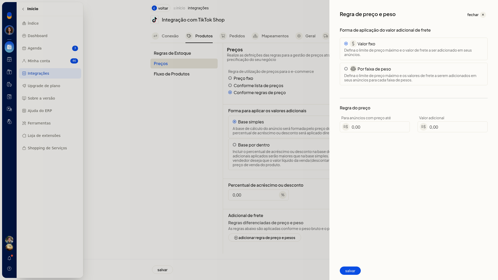
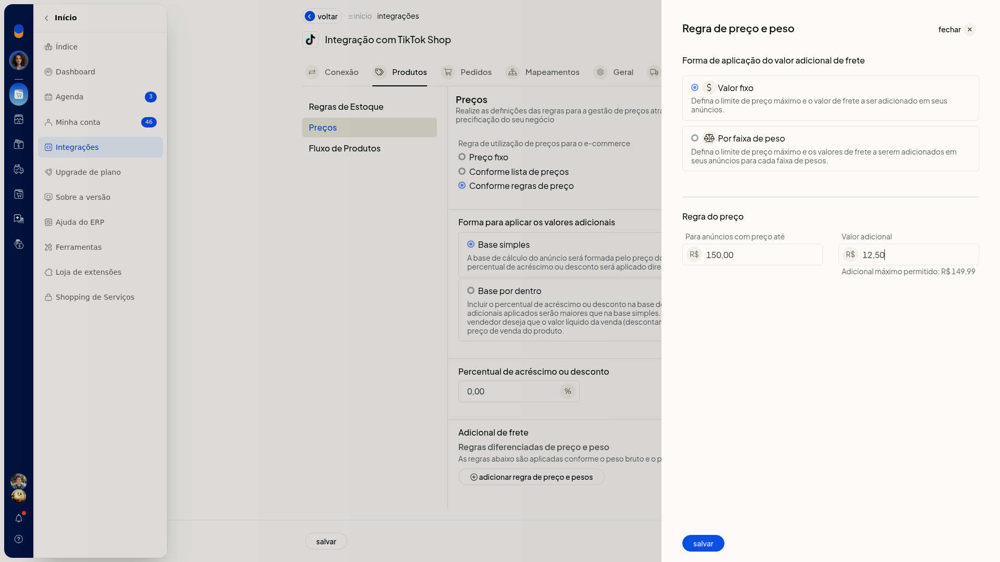
- Em Por faixa de peso, marque Definir um limite de preço máximo se quiser limitar o valor. Clique em adicionar nova regra e informe De e Até em kg, como 0,100 e 1,000, e o frete. Os campos não são obrigatórios. fechar sai do modal sem gravar a regra.
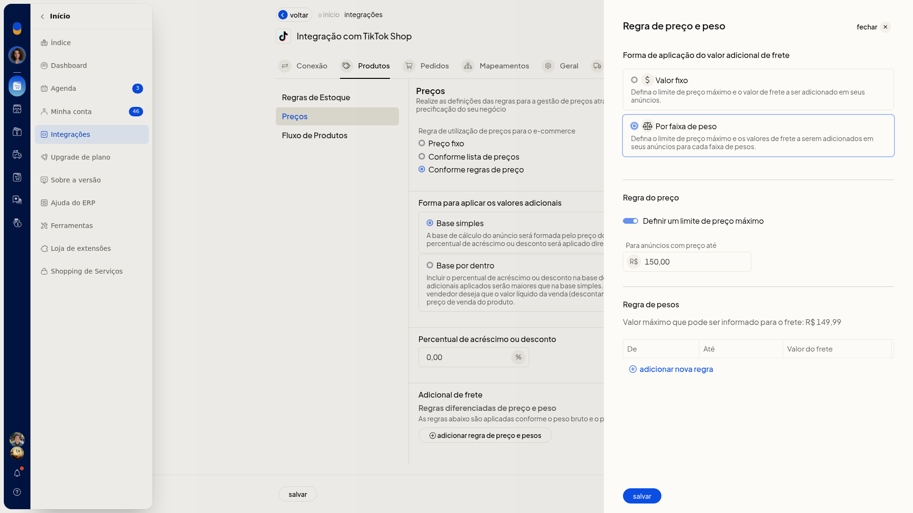
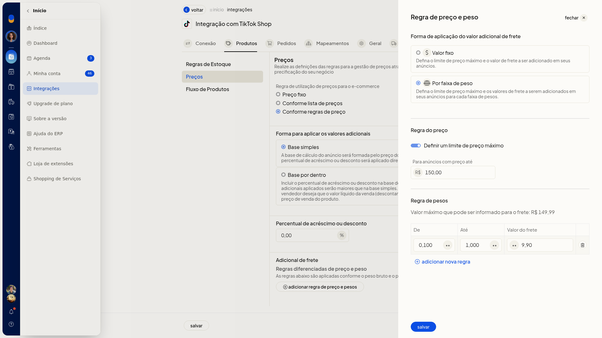
- Abra Fluxo de Produtos. Os campos não são obrigatórios:
-
Ao importar produtos: Importar imagens como anexos ou Apenas importar a URL externa das imagens.
-
Na importação de produtos, ao atualizar um produto, atualizar o Código (SKU): marque a caixa se quiser atualizar o código.
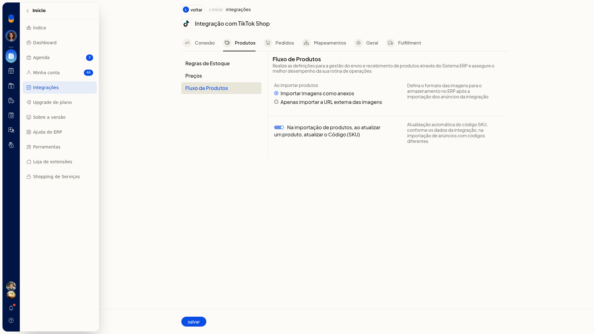
Pedidos
- Na aba Pedidos, abra Fluxo de Pedidos. Marque as caixas que quiser usar. Nenhuma é obrigatória:
-
Importar forma de recebimento
-
Formatar nome dos contatos
-
Sincronização automática de pedidos
-
Interpretador de endereços não estruturados
-
Enviar rastreamento ao alterar situação para enviado
-
Marcar pedido como entregue ao alterar situação
-
Importar valor do frete
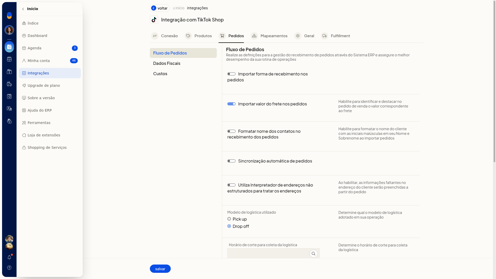
- Complete a logística e o pagamento. Os campos não são obrigatórios:
-
Modelo de logística utilizado: Pick up ou Drop off.
-
Horário de corte para coleta da logística.
-
Método de impressão de etiquetas: Padrão do Canal, PDF ou ZPL.
-
Divergência de pagamento: Utilizar valor de pagamento integrado enviado pelo canal de venda (Recomendado) ou Considerar pagamento como Não integrado.
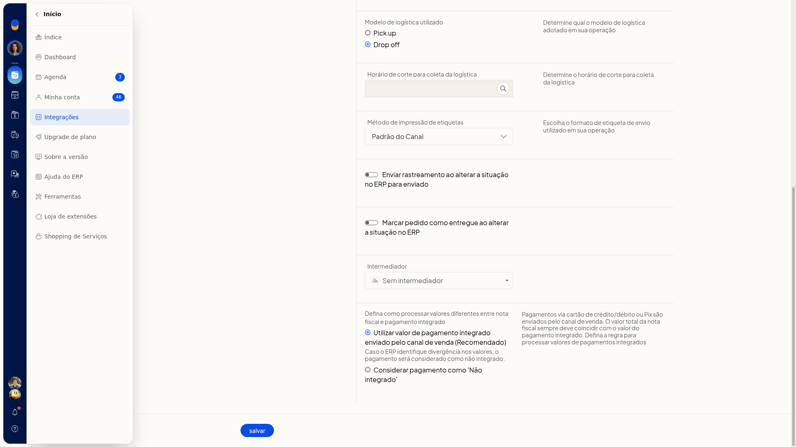
- Abra Dados Fiscais. Os campos não são obrigatórios:
-
Envio de dados da NFe: Automático ao autorizar nota fiscal ou Manual.
-
Natureza de operação diferente para Pedidos de Amostra e Live Giveaway: use o interruptor.
-
Natureza de operação diferente para contribuintes ICMS: use o interruptor.
-
Natureza de operação para venda: selecione uma natureza cadastrada na conta. O texto de ajuda indica a natureza padrão dos pedidos importados.
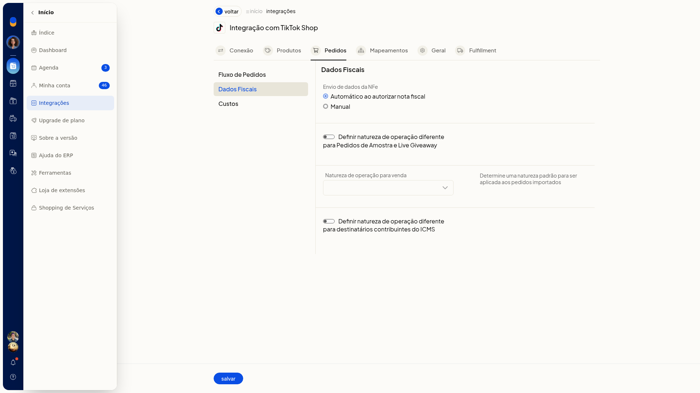
- Abra Custos. Informe o custo geral. Os campos não são obrigatórios:
-
Valor fixo (R$): valor monetário, como 0,00.
-
Taxa (%): percentual, como 0,00 ou 8,50.
-
Base de cálculo do custo: Total da venda ou Total da venda sem frete.
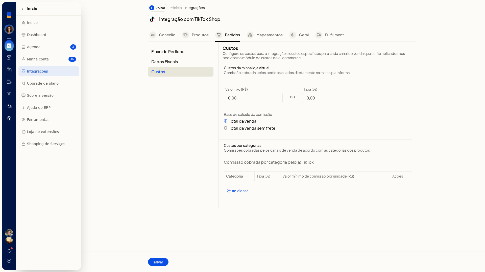
- Na tabela de comissão por categoria, clique em adicionar.
- No modal Comissão por categoria, busque Categoria no Sistema ERP e informe Taxa (%) e Valor mínimo (R$). A ajuda de Valor mínimo (R$) indica o valor mínimo de comissão por unidade. Os campos não são obrigatórios. cancelar fecha o modal sem gravar na tabela.
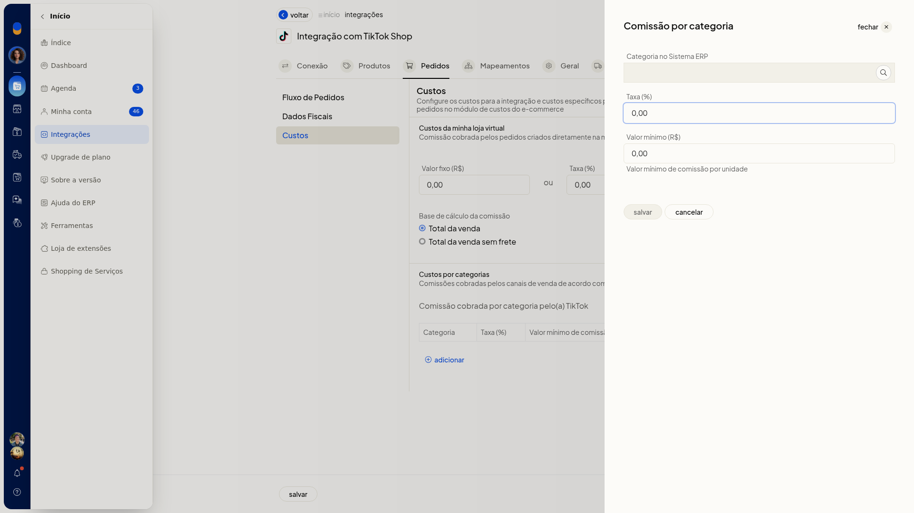
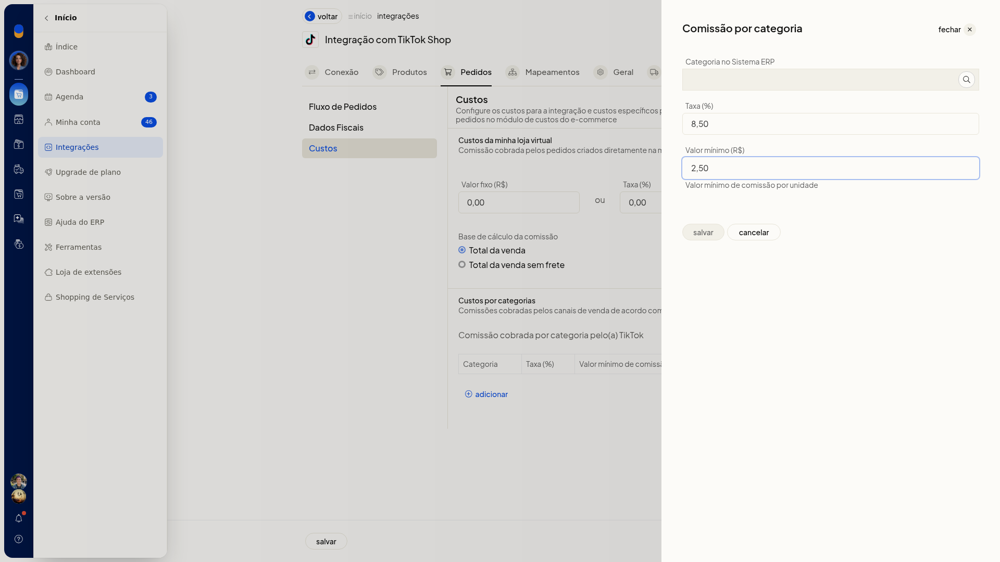
Mapeamentos
- Na aba Mapeamentos, abra Situações de Pedidos.
- Se quiser, marque Permite retroceder situação dos pedidos na sincronização de situações. A caixa não é obrigatória.
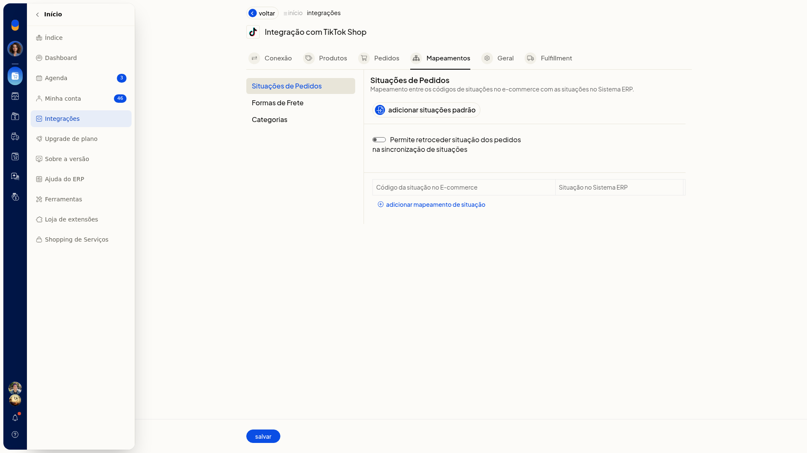
- Clique em adicionar mapeamento de situação. Há também adicionar situações padrão na tela.
- Informe Código da situação no E-commerce e escolha Situação no Sistema ERP. Os campos não são obrigatórios. As situações são Selecione, Em aberto, Faturado, Cancelado, Aprovado, Preparando envio, Enviado, Entregue, Pronto para envio, Dados incompletos, Não entregue e Em devolução. A linha fica na tabela até você salvar a integração.
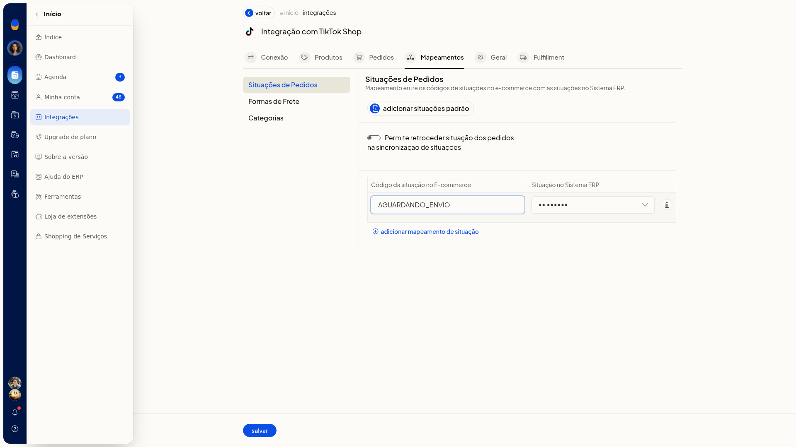
- Abra Formas de Frete e clique em adicionar. A tela também traz um vídeo explicativo.
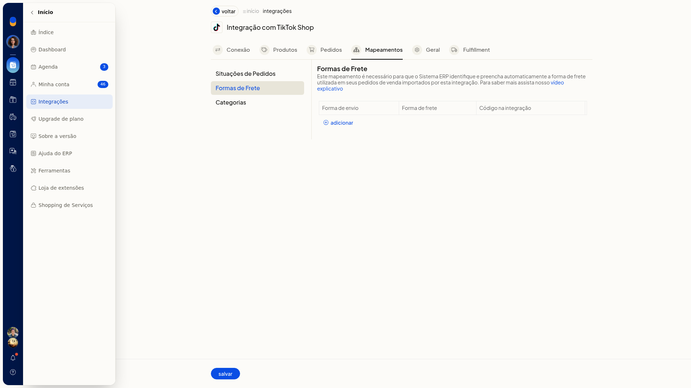
- Na nova linha, busque Forma de envio, selecione Forma de frete e depois informe Código na integração. Os campos não são obrigatórios. Com Forma de envio vazia, o código não aceita digitação.
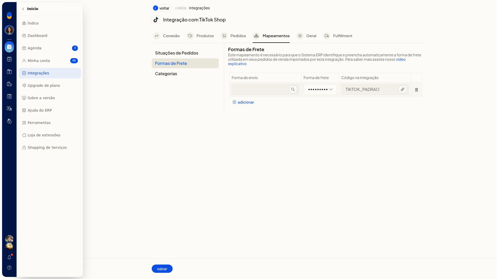
- Abra Categorias e localize a categoria do ERP na tabela Categoria no Sistema ERP / Código da categoria no E-commerce.
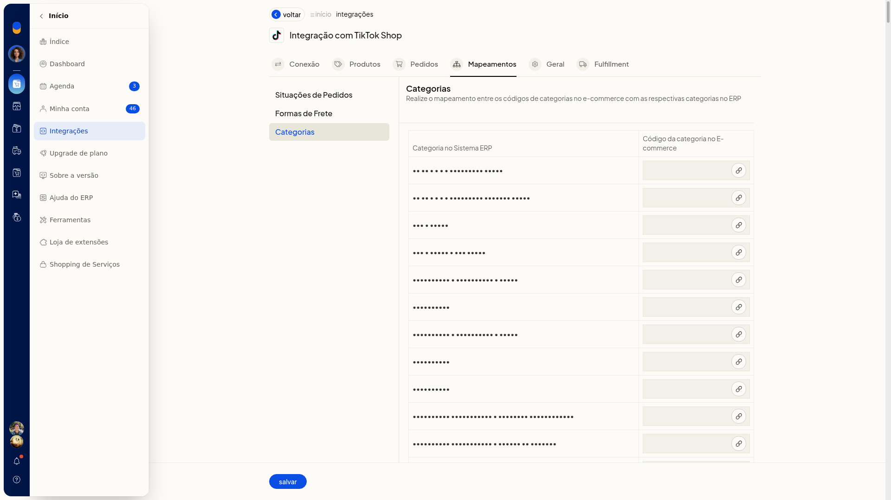
- Clique no botão de vínculo da linha.
- No painel, pesquise em Pesquise a categoria ou selecione abaixo ou expanda a árvore de categorias do TikTok. Código da categoria no E-commerce é preenchido pelo painel, não por digitação livre na linha. Clique em atribuir categoria para confirmar o vínculo. fechar ou cancelar sai sem atribuir.
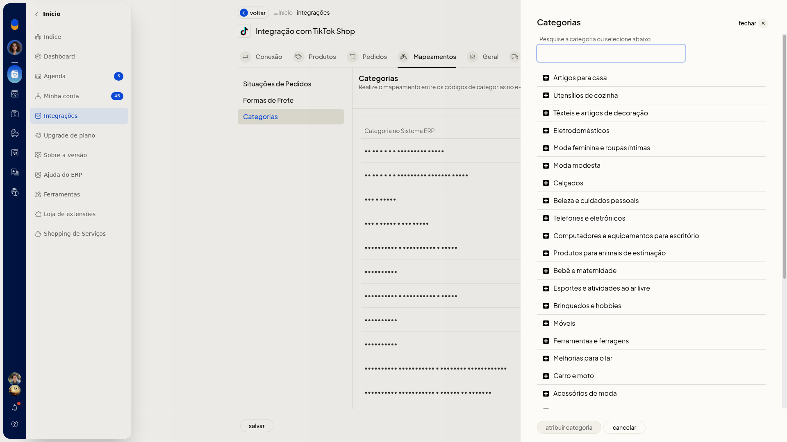
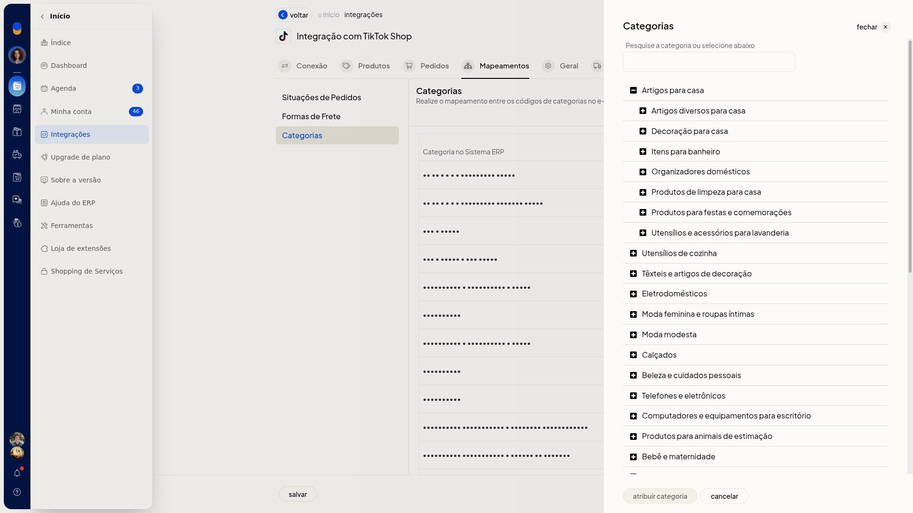
Geral
- Na aba Geral, em Configurações da Loja, busque Loja TikTok Shop associada. O campo não é obrigatório. Escolha a loja depois da autorização.
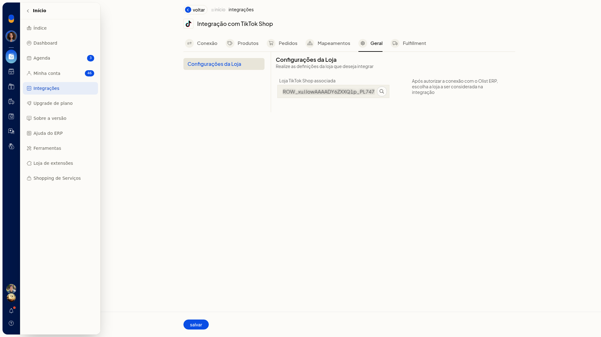
Fulfillment
- Na aba Fulfillment, defina a importação dos pedidos, o depósito e o lançamento de estoque das saídas. Os campos não são obrigatórios:
-
Importar pedidos do Fulfillment: marque a caixa para importar.
-
Depósito do Fulfillment: selecione um depósito cadastrado na conta. A opção inicial é Selecione.
-
Lançamento de estoque para saídas de pedidos Fulfillment: Usar configuração padrão da conta, Manual, Automático ao autorizar a nota fiscal, Automático ao salvar a nota fiscal, Automático ao salvar o pedido ou Automático ao marcar pedido como enviado.
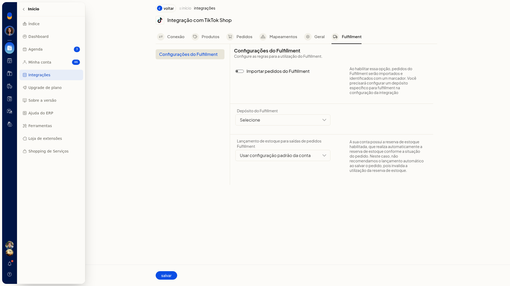
- Clique em salvar para gravar as alterações das abas.
Resultado
Em Conectar Integração, a tela mostra o nome informado, o botão conectar com TikTok Shop e o aviso Você não está logado na loja TikTok enquanto a autorização não é iniciada. No card já existente, gerenciar abre as abas de regras do conector. Modais e linhas novas exibem o que você preencheu antes de salvar, atribuir ou conectar.
Informações adicionais
- A página da integração existente tem só as abas Conexão, Produtos, Pedidos, Mapeamentos, Geral e Fulfillment.
- Em Situações de Pedidos, adicionar situações padrão fica na mesma tela de adicionar mapeamento de situação.
- Em Formas de Frete, a tela inclui um vídeo explicativo.
- atribuir categoria confirma o vínculo da categoria do TikTok. salvar grava as alterações das abas.